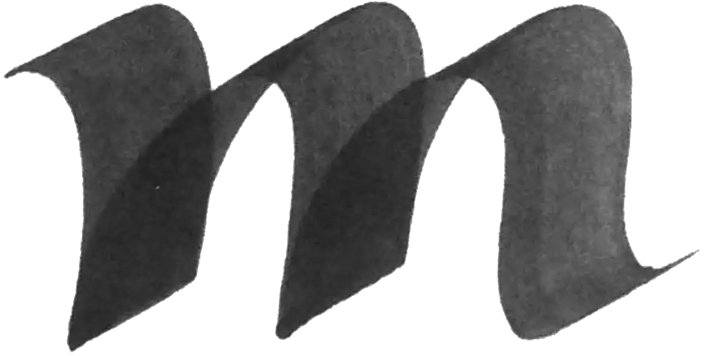
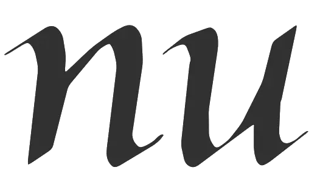

The invention ofthe word stands at the beginning ofa development that without hesitation we call mediaeval. So there i s something to be said for considering the invention of the word as the beginning of the middle ages. In this sense the middle ages extend from around Goo to around 1500. I could also consider the introduction of the minuscule as the be ginning of the middle ages, but then I do not know what I should count as already and as not yet belonging to the middle ages, because, unlike the word image, the minuscule did not appear out of the blue. The mediaeval quality of the minuscule - its rhythm - is already present in the half-uncia) and this name alone suggests that this script is not easy to delimit. The minuscule stands squarely within the Roman development of writing. If this piece of antiquity must already be counted as part of mediaeval writing, then why not the uncia) also� A cultural-historical schema is only a schema, but if a schema is to be useful, then, besides being crude, it must also be clear. I would want to put this forward in support of my proposal to have the middle ages begin at the moment that the civilization of antiquity is brought back strengthened by the Irish. The semitic heritage receives a new impulse that gives civilization a new character: western civilization. The middle ages begin with the invention of the word and the middle ages come to a close with the invention of typogTaphy. My schema has three turning points:
1 . The alphabet (semitic writing)
2. The word (western writing)
3. Typography
The middle ages are our prejudice. If we think of them as a dark time in which the heritage of a classical civilization is blanketed by a stupidity and superstition which our clarity of vision has at long last banished, then all we can do is look back affectionately to the primitive splendour of medieval writing. Were I, however, invested with the sense that, with so much less time in their lives than we (not extended, that is, by artificial light), these individuals mastered their techniques at a level that we view as unattainable, then my middle ages would be other than the 'dark middle ages' of the text books. In my middle ages the most important moments of western civilization - the invention of reading and the invention of typography - come into their own. And for me the western style of reading differs so sharply from the spelling of the ancients that I see the mediaeval invention of the word as, if not the invention of western civilization, then at least its beginning. My confidence is buttressed by my respect for my mediaeval colleague. The richness of mediaeval writing is not made less complex by my schema, but now I can at least indicate the path it takes: the middle ages are the period during which the development of writing is turned toward the consolidation of the word. When western civilization becomes receptive to humanistic propaganda, which wants to return to the loose word image of the early middle ages, then the middle ages have passed.
Every change (sudden or gradual) that gives greater accent to the rhythmic bond of the white forms in the word counts as consolidation of the word. This amounts to a reduction of the white. In the case of the text letter (whose late form is called textura or textualis) this process follows the principle shown in figure 4.1. The following examples show this reduction without recourse to the actual mediaeval forms themselves.
Figure 6.1: using light strokes on broad letters makes for large interior shapes. For a rhythmic balance large shapes between letters are required. The word image is ethereal.
In figure 6.2 the stroke is heavier. Less white remains in the letter. Balance is achieved by a reduction of the interletter shapes. The word image becomes more compact.
In figure 6.3 the letters are even closer together. With letters of the same height as in the previous figures, the interior forms can be accommodated to the reduced interletter shapes only by a narrowing of the letters.
More can be said about the middle ages, but this does not add to or detract from this principle. The mediaeval writers place their letters ever closer together.Tokeep the rhythm intact they make the interior shapes of the letter ever smaller. Consequently the text letters become ever narrower. These are the principles that elucidate the evolution of mediaeval writing. The motive for these changes is an open question. I take for granted that the mediaeval writer was aware of the importance of the word image. Whatever could strengthen the word image he viewed as something that could raise the quality of his work. For anyone who has a notion of the importance of reading and writing, I would think this is a sufficient explanation. My mediaeval colleague was happy to be able to read and write, however, he laid the foundation for a society that dreamed of a blessed future where all people are illiterate. With his invention of typography the mediaeval scribe has relieved us of the need to write well and that has alienated us from the word. And in the end his chasing after a perfect rhythm lapsed into uniformity, because the narrowing of letters led to interior shapes that were not only equivalent, they became identical and the humanists could justifiably call this barbaric-gothic.
Late mediaeval text letters were without exception written in an interrupted construction, but the minuscule was originally a running script (a script written in a returning construction) (figure 6.4). The upstrokes are visible in the triangles that I have darkened in the example. In figure 6.5 I have darkened the very same triangles, but here the pieces of upstroke are swallowed up by the broader stroke. The difference between the returning construction of 6.5 and the interrupted construction of 6.6 is not visible in the shape of the letter.When the interrupted construction is adopted the letter can acquire feet accentuating the ends of the strokes, but the feet are details from which no hasty conclusions can be drawn (figure 6.6). This is the prototype of textura. If this etter were to be made narrower, the difference between the curves and the feet would become too small (figure 6.7). The letter is no longer recognizable as an m. This can be remedied with a backstroke in the feet (figure 6.8). This is the endpoint of the blackening of the textura. The point of departure for this development is the preservation of the arches in the letters. The arch can be conceived of as a bowed parallelogram (figure 6.9). Given a larger counterpoint and a smaller span the parallelogram approaches a lozenge (figure 6.10). There is less room for the bowing of the arch to come to rights. Consequently the arch is flattened.
The alternative, given this point of departure, is the preservation of the upstroke (as in a running construction). As long as the upstroke curves out far enough, it will remain visible, in spite of the larger counterpoint (figure 6.11). But now there is no room for the arch. The alternative to the textura is a different principle of form. This form-type is called cursive.
An eighth-century manuscript lacking discrete word images might be put on the table, with the question 'where was it written?' Even without seeing the manuscript, I am almost certain the answer would have to be: in Italy. The later the manuscript, the greater the chance that the answer is correct. Earlier in the eighth century it might have been the case that the manuscript would have originated from another corner of Europe, not yet pervaded by Irish-Anglo-Saxon civilization. Italy lagged behind, as it did throughout the middle ages. The consolidation of the word never made its way to the other side of the Alps. The Italians did however adopt the forms that the consolidation gave rise to, but not the heavy stroke from which the forms derived. The humanistic cursive is a cursive with a small counterpoint (figure 6.13) and the roman has all the characteristics of the textura but for the heavy stroke (figure 6.12). After 400 years we have become accustomed to roman type, but we might yet do well to marvel at the fact that the reversal in the textura foot has been so emphatically adopted, and for no other reason than the prestige of mediaeval western civilization. In figure 6.14 I show the roman against its gothic model, the textura.
The early mediaeval minuscule shown in figure 6.15 has a modest angle (<30°) between the counterpoint and the direction of the line. In figure 6.16 the same form is written with a greater angle (+/- 45°). This places the shape of the minuscule in the neighbourhood of the forms of the humanistic cursive. It is not until later in the middle ages that cursive writing is cultivated, but the phenomenon is already clearly visible in the manuscripts of the eighth century, for example in the Book of Armagh.
These sorts of complications occur almost everywhere. The consolidation of the word image involves ever-narrower letters and an ever-heavier stroke. This is the general princi ple, but for every writer a different letter width feels normal and every pen has a different width. Those who are impatient to know all the ins and outs of the affair may be driven to de spair in the face of these additional restrictions, but for palaeography they are of the essence. They constitute the most important evidence when it is a matter of determining how many writers have worked on a given book or when it is a matter of tracing the earnings and goings of a peripatetic writer.
Of even greater interest are instances where the deviations follow a clear pattern. Reversibility of translation is an irrefutable principle.
The stroke of western writing is in principle point-symmetrical: strokes can be rotated 180° without anything changing in the position of the writer in relation to the stroke. In other words, I can just as well make every stroke upside-down. With some letters even the entire construction is capable of being written in reverse: o, s, l, d, p, u, n, b, q, z. Even when these letters are written upside down or when they are turned fully around, they stay letters. The only thing that changes is their meaning. The meaning of p or d and the meaning of u or n does not depend on the form of the letter but only on my position vis a vis the form (figure 6.17).
Line-symmetry, where figures are each other's mirror images, makes its appearance in western writing with expansion. Here the meaning of a letter can also change when I look at the letter from its backside. A d now is not only a rotated p but also a reflected b. I am sure of the meaning of the form only to the extent that I am certain of my position. This certainty is lacking in small children. Teaching of reading based on recognition of meanings of letters bypasses the child. It disrupts the development of cerebral functioning. Teaching reading too must have as its starting point the white of the word. But this simple proposition presupposes a turnabout in pedagogy, in the study ofwriting, and in cultural history. Not only that, designers of schoolbooks must be re-educated as well.
In figure 3.11 and figure 3.12 of chapter 3, a returning and an interrupted construction are shown side by side. In consistent construction the interrupted cursive of figure 6.19 is the alternative to the returning construction of figure 6.18.
Technically a u is an n in which the direction of the stroke of the one is the inverse of the direction of the stroke of the other. By rotating the letter through 180° the direction of the stroke can remain unchanged. For the reader this difference is laden with symbolism. How this symbolism operates I do not know.The difference is not entirely rational. It might not even have a risen if we could only clearly remember that there was a time when we could 'read' our picture books upside down without problems. But, rational or not, the feeling of a difference does exist. It has even forced its way into the professional literature, which advances the 'discovery' that we actually read the tops of the lines (or the bottoms - I 've forgotten) and that letter designers consequently need to pay special attention to the tops of their letters (or the bottoms). Here the not entirely rational difference begins to border on the nonsensical. That no one has as yet protested points to the force of the irrational distinction between above and below. Embracing the distinction creates new alternatives for writing the cursives shown in figures 6.18 and 6.19.
In figure 6.20 a returning construction occurs only when the upstroke curves clockwise. In figure 6.21 upstrokes that run counterclockwise are the only kind of upstrokes that are written. The differences between these four writing styles spring into view the moment we are conscious of their construction. Yet these differences occur in manuscripts that were clearly intended to look the same, for instance in books on which several writers worked. At times I have thought that the old writers were not conscious ofconstruction. But I find the same unconscious differences in the work of students who are equipped to analyse fully the construction of a piece of writing. Inconsistent construction is a peculiarity of the individual writer, not of the script. This is of importance for palaeography. But it relativizes my robust story about the principles leading to the difference between roman and cursive. The fixed pattern in this slippery material is the consistency of the inconsistencies. I have yet to see a manuscript in which the constructions of figures 6.18, 6.19, 6.20, and 6.21 are used interchangeably by the selfsame scribe, and I think that such a manuscript does not exist. At most I can imagine that a manuscript is started with the best of intentions in regard to a specific principle and that the writer falls into his own pattern when he has gained momentum.
The richness of form in late-mediaeval writing is in large part due to a construction that has not yet been dealt with, the bastarda. I hesitate to call the bastarda a writing style. If I do call it a writing style, I need to add that the various phases of its development have been used concurrently long enough to present themselves as different writing styles. They even have different names, such as French bastarda, 'lettre bourguignonne', Netherlandic bastarda, and fraktur, but these names themselves reveal that it is a matter of regional variations of a common principle. Fraktur is German and the Burgundian bastarda is Flemish, or at least Southern Netherlandic. In the scholarly literature, because of the traditional separation of printing history and the history of handwriting, any attempt at an all-embracing description of the bastarda is absent.The fraktur is left to hang in the air. In search of the principle I lay aside the taboo.
In their cursives French manuscripts from the beginning of the fourteenth century exhibit an aberrant r or an aberrant a or both. Figure 6.23 shows these deviations next to a proper cursive construction (figure 6.22). From the onset cursive scripts with these divergent letters were called bastarda.
The constructions (figures 6.24 and 6.25) show a typical backstroke at the transition between upstroke and downstroke. The heartline makes a triangle. The backstroke in the returning construction (or the imitation of it in interrupted construction) is the defining characteristic of what I here call bastarda. The backstroke pulls apart upstroke and downstroke. They can be bent back toward each other, but there always remains something of a heavying of the stroke that wrenches slightly at the rhythm of the black forms. The theoreticians of the bastarda jan van den Velde and johann Neudorffer afford these thickenings an emphatic presence in their virtuoso examples: the thickenings belong.
The backstroke is a complication for the writer. So there must have been something thatjustified the effort, especially early on, because later the writer could take comfort in the certainty that this is how it belonged and that everyone did it like this. In figure 6.22 I have written the cursive in such a way that the bastarda represents an improvement. The web of space under the r cuts a hole into the word that is stopped by the backstroke. Add to this, perhaps, that the top of the cursive a has the letter begin with an upstroke, which is not favourable technically. In the bastarda the a begins like an o that is completed with a downstroke incorporating a bridge. But maybe I am seeing too much in this, and the backstroke of the a is a borrowing from the r. I say this because the r resembles an a, a resemblance which holds only if the difference between above and below has no meaning. And of that I am, given figures 6.20 and 6.21, not so certain.
The Burgundian bastarda is a subsequent phase in which every letter with an upstroke has a backstroke (figure 6.26). Clearly this has to do with aesthetics. The bastarda is beginning to look like the textura (figure 6.27). Despite the fact that a form that is native to a returning construction (the cursive) is written with lifts - or interrupted - to make the cursive 'more beautiful', it looks as if the bastarda is an attempt to approach the articulation of an interrupted hand (the textura) with a returning construction. This holds even more for the stretched bastarda presumably put into circulation by Jaquemaart Pilavaine, who worked in Bergen around 1450 (figure 6.28).
In the calligraphy books of the seventeenth century this tall letter is called the Netherlandic bastarda, but also fraktur, because there is no difference between this Netherlandic hand and the German fraktur. The German fraktur appears for the first time in a Latin prayer book that Maximilian had printed in Augsburg. He delivered a model for the type along with it.The model has not been recovered, but this emperor was the Duke of Burgundy, and the Count of Flanders. When he gave the commission, he was in Brugge, the centre of Burgundian manuscript production. Consequently it is not surprising that, apart from ascenders, the new German typographic letter was identical to the Burgundian hand. The German script comes from Belgium.
In many cases it is difficult to decide whether a script is still an ordinary cursive or a bastarda, especially if the form appears in an interrupted construction. Maybe the roof of the a is a workable criterion. If the cursive (figure 6.29) has a roof, it is an upstroke, written from right to left. In the bastarda (figure 6.30) the roof is a downstroke, written from left to right.